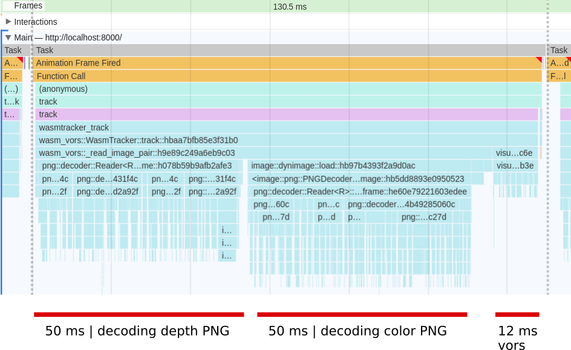

Matthieu Pizenberg
Pure Rust PNG decoder with good performances in WebAssembly
2019
This project aims at implementing a pure Rust PNG decoder, in order to facilitate usage of PNG images in the context of WebAssembly. The code is available online on GitHub at mpizenberg/png-decoder. There already exists a well-known PNG decoding crate image-rs/image-png. At the time I needed WebAssembly support though, it was too slow for real time decoding of images in the browser. I have discussed performances issues on GitHub. As displayed in the following flame graph, it was taking 100 ms to decode two 640x480 PNG images, one for the color image, the other for the depth.

From the fact that OpenCV decodes images much faster, and that Rust should have similar performances than C++, I decided to give a try at a new PNG decoder. This implementation keeps in mind that it should be "wasm-friendly", meaning we limit the number of memory allocations, which is more costly in WebAssembly.
The PNG specification is available online. Under the hood, the pixel metadata is compressed with the deflate algorithm, whose spec is also available online. PNG is a simple structured format. A file contains successive data blocks called chunks of different types. The most interesting types are IHDR (header), IDAT (data) and IEND (end of file). The body of the image is composed by successive IDAT blocks containing transformed lines of the image (called "filtered") to reduce entropy, then compressed with the deflate algorithm. I have implemented the parsing with a fast parser combinator library called nom. The unfiltering is just simple code. Fortunately, a very fast deflate decoder (often called "inflate") already exists in Rust, so we reused that crate named miniz-oxide.
After a few round of optimizations,
the performances of the decoding code are great,
especially for images with a majority of Sub scanline filters
(like the "depth", "eye", "rgb" and "texture_alpha" images in table below).
I've written down an approach comparison with the png crate in
rust discourse forum in case interested.
Below is a table summarizing decoding timings for images I used while writing the code.
| Image | this | png crate | OpenCV | this (wasm) | png (wasm) |
|---|---|---|---|---|---|
| depth.png | 4.0 ms | 9.1 ms | 4.0 ms | 8.5 ms | 30.7 ms |
| eye.png | 0.48 ms | 0.96 ms | 0.72 ms | 1.5 ms | 5.9 ms |
| inkscape.png | 7.1 ms | 9.6 ms | 6.6 ms | 13.4 ms | 30.2 ms |
| rgb.png | 6.6 ms | 16.0 ms | 6.5 ms | 13.7 ms | 52.1 ms |
| screen.png | 6.5 ms | 10.2 ms | 6.6 ms | 11.6 ms | 29.8 ms |
| texture_alpha.png | 0.68 ms | 1.94 ms | 0.99 ms | 1.8 ms | 8.0 ms |
| transparent.png | 15.2 ms | 17.4 ms | 13.2 ms | 26.1 ms | 55.8 ms |